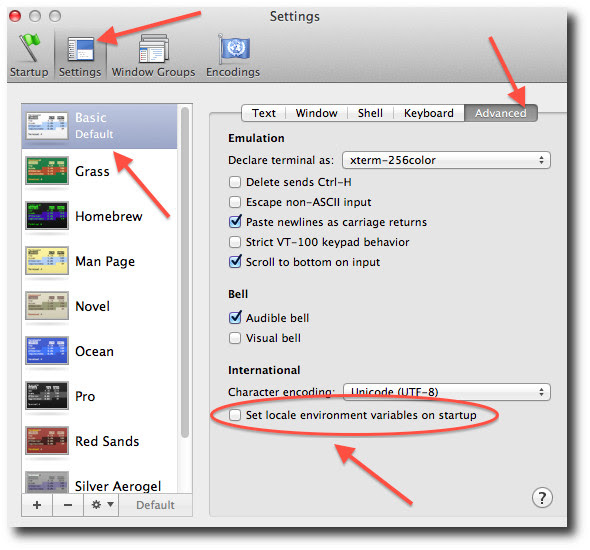
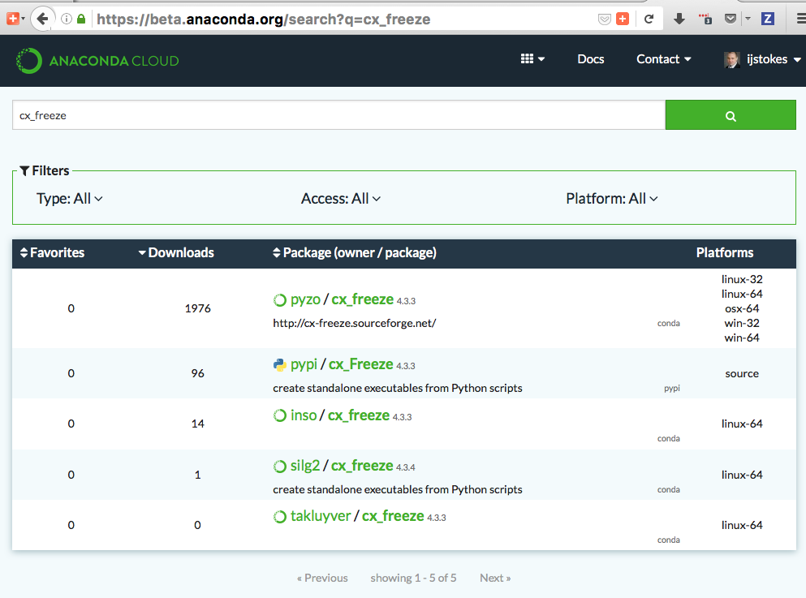

故障排除#
Troubleshooting
在 Windows 中使用 conda 批处理脚本提前退出#
Using conda in Windows Batch script exits early
In conda 4.6+, the way that you interact with conda goes through a batch script (%PREFIX%\condabin\conda.bat).
Unfortunately, this means it's a little complicated to use conda from other batch scripts. When using batch
scripts from within batch scripts, you must prefix your command with CALL. If you do not do this, your batch
script that calls conda will exit immediately after the conda usage. In other words, if you write this in a .bat file:
conda create myenv python conda activate myenv echo test
Neither the activation, nor the echo will happen. You must write this in your batch script:
CALL conda create myenv python CALL conda activate myenv echo test
This is known behavior with cmd.exe, and we have not found any way to change it. https://stackoverflow.com/questions/4798879/how-do-i-run-a-batch-script-from-within-a-batch-script/4798965
NumPy MKL 库加载失败#
NumPy MKL library load failed
Error messages like
Intel MKL FATAL ERROR: Cannot load mkl_intel_thread.dll
or
The ordinal 241 could not be located in the the dynamic link library
原因#
Cause
NumPy is unable to load the correct MKL or Intel OpenMP runtime libraries. This is almost always caused by one of two things:
The environment with NumPy has not been activated.
Another software vendor has installed MKL or Intel OpenMP (libiomp5md.dll) files into the C:\Windows\System32 folder. These files are being loaded before Anaconda's and they're not compatible.
解决方案#
Solution
If you are not activating your environments, start with doing that. There's more info at Activating environments. If you are still stuck, you may need to consider more drastic measures.
Remove any MKL-related files from C:\Windows\System32. We recommend renaming them to add .bak to the filename to effectively hide them. Observe if any other software breaks. Try moving the DLL files alongside the .exe of the software that broke. If it works again, you can keep things in the moved state - Anaconda doesn't need MKL in System32, and no other software should need it either. If you identify software that is installing software here, please contact the creators of that software. Inform them that their practice of installing MKL to a global location is fragile and is breaking other people's software and wasting a lot of time. See the list of guilty parties below.
You may try a special DLL loading mode that Anaconda builds into Python. This changes the DLL search path from System32 first to System32 as another entry on PATH, allowing libraries in your conda environment to be found before the libraries in System32. Control of this feature is done with environment variables. Only Python builds beyond these builds will react to these environment variables:
Python 2.7.15 build 14
Python 3.6.8 build 7
Python 3.7.2 build 8
To update Python from the defaults channel:
conda update -c defaults python备注
Anaconda has built special patches into its builds of Python to enable this functionality. If you get your Python package from somewhere else (e.g. conda-forge), these flags may not do anything.
Control environment variables:
CONDA_DLL_SEARCH_MODIFICATION_ENABLE
CONDA_DLL_SEARCH_MODIFICATION_DEBUG
CONDA_DLL_SEARCH_MODIFICATION_NEVER_ADD_WINDOWS_DIRECTORY
CONDA_DLL_SEARCH_MODIFICATION_NEVER_ADD_CWDTo set variables on Windows, you may use either the CLI or a Windows GUI.
These should be set to a value of
1to enable them. For example, in a terminal:set CONDA_DLL_SEARCH_MODIFICATION_ENABLE=1备注
Only
CONDA_DLL_SEARCH_MODIFICATION_ENABLEshould be set finally.
List of known software that installs Intel libraries to C:\Windows\System32:
Amplitube, by IK Multimedia
ASIO4ALL, by Michael Tippach
If you find others, please let us know. If you're on this list and you want to fix things, let us know. In either case, the conda issue tracker at conda/conda#issues is the best way to reach us.
SSL 连接错误#
SSL connection errors
This is a broad umbrella of errors with many causes. Here are some we've seen.
CondaHTTPError: HTTP 000 CONNECTION FAILED#
CondaHTTPError: HTTP 000 CONNECTION FAILED
If you're on Windows and you see this error, look a little further down in the error text. Do you see something like this?:
SSLError(MaxRetryError('HTTPSConnectionPool(host=\'repo.anaconda.com\', port=443): Max retries exceeded with url: /pkgs/r/win-32/repodata.json.bz2 (Caused by SSLError("Can\'t connect to HTTPS URL because the SSL module is not available."))'))
The key part there is the last bit:
Caused by SSLError("Can\'t connect to HTTPS URL because the SSL module is not available.")
Conda is having problems because it can't find the OpenSSL libraries that it needs.
原因#
Cause
You may observe this error cropping up after a conda update. More recent versions of conda and more recent builds of Python are more strict about requiring activation of environments. We're working on better error messages for them, but here's the story for now. Windows relies on the PATH environment variable as the way to locate libraries that are not in the immediate folder, and also not in the C:\Windows\System32 folder. Searching for libraries in the PATH folders goes from left to right. If you choose to put Anaconda's folders on PATH, there are several of them:
(install root)
(install root)/Library/(MSYS2 env)/bin ## dependent on MSYS2 packages
(install root)/Library/mingw-w64/bin
(install root)/Library/usr/bin
(install root)/Library/bin
(install root)/Scripts
(install root)/bin
(install root)/condabin
Early installers for Anaconda put these on PATH. That was ultimately fragile
because Anaconda isn't the only software on the system. If other software had
similarly named executables or libraries, and came earlier on PATH, Anaconda
could break. On the flip side, Anaconda could break other software if Anaconda
were earlier in the PATH order and shadowed any other executables or libraries.
To make this easier, we began recommending "activation" instead of modifying
PATH. Activation is a tool where conda sets your PATH, and also runs any custom
package scripts which are often used to set additional environment variables
that are necessary for software to run (e.g. JAVA_HOME). Because activation runs
only in a local terminal session (as opposed to the permanent PATH entry), it is
safe to put Anaconda's PATH entries first. That means that Anaconda's libraries
get higher priority when you're running Anaconda but Anaconda doesn't interfere
with other software when you're not running Anaconda.
Anaconda's Python interpreter included a patch for a long time that added the (install root)/Library/bin folder to that Python's PATH. Unfortunately, this interfered with reasoning about PATH at all when using that Python interpreter. We removed that patch in Python 3.7.0, and we regret that this has caused problems for people who are not activating their environments and who otherwise do not have the proper entries on PATH. We're experimenting with approaches that will allow our executables to be less dependent on PATH and more self-aware of their needed library load paths. For now, though, the only solutions to this problem are to manage PATH properly.
Our humble opinion is that activation is the easiest way to ensure that things work. See more information on activation in Activating environments.
解决方案#
Solution
Use shells opened from Anaconda Navigator. If you use a GUI IDE and you see this error, ask the developers of your IDE to add activation for conda environments.
SSL 证书错误#
SSL certificate errors
原因#
Cause
Installing packages may produce a "connection failed" error if you do not have the certificates for a secure connection to the package repository.
解决方案#
Solution
Pip can use the --use-feature=truststore option to use the operating system
certificate store. This may be of help in typically corporate environments with
https traffic inspection, where the corporate CA is installed in the operating
system certificate store:
pip install --use-feature=truststore
Conda has a similar option:
conda config --set ssl_verify truststore
Alternatively, pip can use the --trusted-host option to indicate that the URL of the
repository is trusted:
pip install --trusted-host pypi.org
Conda has three similar options.
The option
--insecureor-kignores certificate validation errors for all hosts.Running
conda create --helpshows:Networking Options: -k, --insecure Allow conda to perform "insecure" SSL connections and transfers. Equivalent to setting 'ssl_verify' to 'False'.
The configuration option
ssl_verifycan be set toFalse.Running
conda config --describe ssl_verifyshows:# # ssl_verify (bool, str) # # aliases: verify_ssl # # conda verifies SSL certificates for HTTPS requests, just like a web # # browser. By default, SSL verification is enabled and conda operations # # will fail if a required URL's certificate cannot be verified. Setting # # ssl_verify to False disables certification verification. The value for # # ssl_verify can also be (1) a path to a CA bundle file, (2) a path to a # # directory containing certificates of trusted CA, or (3) 'truststore' # # to use the operating system certificate store. # # # ssl_verify: true
Running
conda config --set ssl_verify falsemodifies~/.condarcand sets the-kflag for all future conda operations performed by that user. Runningconda config --helpshows other configuration scope options.When using
conda config, the user's conda configuration file at~/.condarcis used by default. The flag--systemwill instead write to the system configuration file for all users at<CONDA_BASE_ENV>/.condarc. The flag--envwill instead write to the active conda environment's configuration file at<PATH_TO_ACTIVE_CONDA_ENV>/.condarc. If--envis used and no environment is active, the user configuration file is used.The configuration option
ssl_verifycan be used to install new certificates.Running
conda config --describe ssl_verifyshows:# # ssl_verify (bool, str) # # aliases: verify_ssl # # conda verifies SSL certificates for HTTPS requests, just like a web # # browser. By default, SSL verification is enabled, and conda operations # # will fail if a required URL's certificate cannot be verified. Setting # # ssl_verify to False disables certification verification. The value for # # ssl_verify can also be (1) a path to a CA bundle file, (2) a path to a # # directory containing certificates of trusted CA, or (3) 'truststore' # # to use the operating system certificate store. # # # ssl_verify: true
Your network administrator can give you a certificate bundle for your network's firewall. Then
ssl_verifycan be set to the path of that certificate authority (CA) bundle and package installation operations will complete without connection errors.When using
conda config, the user's conda configuration file at~/.condarcis used by default. The flag--systemwill instead write to the system configuration file for all users at<CONDA_BASE_ENV>/.condarc. The flag--envwill instead write to the active conda environment's configuration file at<PATH_TO_ACTIVE_CONDA_ENV>/.condarc. If--envis used and no environment is active, the user configuration file is used.
SSL 验证错误#
SSL verification errors
原因#
Cause
This error may be caused by lack of activation on Windows or expired certifications:
SSL verification error: [SSL: CERTIFICATE_VERIFY_FAILED] certificate verify failed (_ssl.c:590)
解决方案#
Solution
Make sure your conda is up-to-date: conda --version
If not, run: conda update conda
Try using the operating system certificate store. Set you ssl_verify variable to truststore
using the following command:
conda config --set ssl_verify truststore
If using the operating system certificate store does not solve your issue, temporarily
set your ssl_verify variable to false, upgrade the requests package, and then
set ssl_verify back to true using the following commands:
conda config --set ssl_verify false
conda update requests
conda config --set ssl_verify true
You can also set ssl_verify to a string path to a certificate, which can be used to verify
SSL connections. Modify your .condarc and include the following:
ssl_verify: path-to-cert/chain/filename.ext
If the repository uses a self-signed certificate, use the actual path to the certificate. If the repository is signed by a private certificate authority (CA), the file needs to include the root certificate and any intermediate certificates.
安装过程中出现权限被拒绝错误#
Permission denied errors during installation
原因#
Cause
The umask command determines the mask settings that control
how file permissions are set for newly created files. If you
have a very restrictive umask, such as 077, you get
"permission denied" errors.
解决方案#
Solution
Set a less restrictive umask before calling conda commands.
Conda was intended as a user space tool, but often users need to
use it in a global environment. One place this can go awry is
with restrictive file permissions. Conda creates links when you
install files that have to be read by others on the system.
To give yourself full permissions for files and directories but prevent the group and other users from having access:
Before installing, set the
umaskto007.Install conda.
Return the
umaskto the original setting:umask 007 conda install umask 077
For more information on umask, see
http://en.wikipedia.org/wiki/Umask.
使用 sudo conda 命令后出现权限被拒绝错误#
Permission denied errors after using sudo conda command
解决方案#
Solution
Once you run conda with sudo, you must use sudo forever. We recommend that you NEVER run conda with sudo.
已安装错误消息#
Already installed error message
原因#
Cause
If you are trying to fix conda problems without removing the current installation and you try to reinstall Miniconda or Anaconda to fix it, you get an error message that Miniconda or Anaconda is already installed and you cannot continue.
解决方案#
Solution
Install using the --force option.
Download and install the appropriate Miniconda
for your operating system from the Miniconda download page using the force option
--force or -f:
bash Miniconda3-latest-MacOSX-x86_64.sh -f
备注
Substitute the appropriate filename and version for your operating system.
备注
Be sure that you install to the same location as your existing install so it overwrites the core conda files and does not install a duplicate in a new folder.
Conda 报告软件包已安装，但似乎并未安装#
Conda reports that a package is installed, but it appears not to be
Sometimes conda claims that a package is already installed but it does not appear to be, for example, a Python package that gives ImportError.
There are several possible causes for this problem, each with its own solution.
原因#
Cause
You are not in the same conda environment as your package.
解决方案#
Solution
Make sure that you are in the same conda environment as your package. The
conda infocommand tells you what environment is currently active underdefault environment.Verify that you are using the Python from the correct environment by running:
import sys print(sys.prefix)
原因#
Cause
For Python packages, you have set the PYTHONPATH or PYTHONHOME
variable. These environment variables cause Python to load files
from locations other than the standard ones. Conda works best
when these environment variables are not set, as their typical
use cases are obviated by conda environments and a common issue
is that they cause Python to pick up the wrong or broken
versions of a library.
解决方案#
Solution
For Python packages, make sure you have not set the PYTHONPATH
or PYTHONHOME variables. The command conda info -a displays
the values of these environment variables.
To unset these environment variables temporarily for the current terminal session, run
unset PYTHONPATH.To unset them permanently, check for lines in the files:
If you use bash---
~/.bashrc,~/.bash_profile,~/.profile.If you use zsh---
~/.zshrc.If you use PowerShell on Windows, the file output by
$PROFILE.
原因#
Cause
You have site-specific directories or, for Python, you have
so-called site-specific files. These are typically located in
~/.local on macOS and Linux. For a full description of the locations of
site-specific packages, see PEP 370. As with
PYTHONPATH, Python may try importing packages from this
directory, which can cause issues.
解决方案#
Solution
For Python packages, remove site-specific directories and site-specific files.
原因#
Cause
For C libraries, the following environment variables have been set:
macOS---
DYLD_LIBRARY_PATH.Linux---
LD_LIBRARY_PATH.
These act similarly to PYTHONPATH for Python. If they are
set, they can cause libraries to be loaded from locations other
than the conda environment. Conda environments obviate most use
cases for these variables. The command conda info -a shows
what these are set to.
解决方案#
Solution
Unset DYLD_LIBRARY_PATH or LD_LIBRARY_PATH.
原因#
Cause
Occasionally, an installed package becomes corrupted. Conda works
by unpacking the packages in the pkgs directory and then
hard-linking them to the environment. Sometimes these get
corrupted, breaking all environments that use them. They
also break any additional environments since the same files are hard-linked
each time.
解决方案#
Solution
Run the command conda install -f to unarchive the package
again and relink it. It also does an MD5 verification on the
package. Usually if this is different it is because your
channels have changed and there is a different package with the
same name, version, and build number.
备注
This breaks the links to any other environments that
already had this package installed, so you have to reinstall it
there, too. It also means that running conda install -f a lot
can use up significant disk space if you have many environments.
备注
The -f flag to conda install (--force) implies
--no-deps, so conda install -f package does not reinstall
any of the dependencies of package.
pkg_resources.DistributionNotFound: conda==3.6.1-6-gb31b0d4-dirty#
pkg_resources.DistributionNotFound: conda==3.6.1-6-gb31b0d4-dirty
原因#
Cause
The local version of conda needs updating.
解决方案#
Solution
Force reinstall conda. A useful way to work off the development
version of conda is to run python setup.py develop on a
checkout of the conda GitHub repository. However, if you are not
regularly running git pull, it is a good idea to un-develop,
as you will otherwise not get any regular updates to conda. The
normal way to do this is to run python setup.py develop -u.
However, this command does not replace the conda script
itself. With other packages, this is not an issue, as you can
just reinstall them with conda, but conda cannot be used if
conda is installed.
The fix is to use the ./bin/conda executable in the conda
git repository to force reinstall conda. That is, run
./bin/conda install -f conda. You can then verify with
conda info that you have the latest version of conda, and not
a git checkout. The version should not include any hashes.
macOS 错误“ValueError unknown locale: UTF-8”#
macOS error "ValueError unknown locale: UTF-8"
原因#
Cause
This is a bug in the macOS Terminal app that shows up only in certain locales. Locales are country-language combinations.
解决方案#
Solution
Open Terminal in
/Applications/UtilitiesClear the Set locale environment variables on startup checkbox.

This sets your LANG environment variable to be empty. This may
cause Terminal to use incorrect settings for your locale. The
locale command in Terminal tells you what settings are used.
To use the correct language, add a line to your bash profile,
which is typically ~/.profile:
export LANG=your-lang
备注
Replace your-lang with the correct locale specifier for
your language.
The command locale -a displays all the specifiers. For
example, the language code for US English is en_US.UTF-8. The
locale affects what translations are used when they are available
and also how dates, currencies, and decimals are formatted.
AttributeError 或缺失getproxies#
AttributeError or missing getproxies
When running a command such as conda update ipython, you may
get an AttributeError: 'module' object has no attribute
'getproxies'.
原因#
Cause
This can be caused by an old version of requests or by having
the PYTHONPATH environment variable set.
解决方案#
Solution
Update requests and be sure PYTHONPATH is not set:
Run
conda info -ato show therequestsversion and various environment variables such asPYTHONPATH.Update the
requestsversion withpip install -U requests.Clear
PYTHONPATH:On Windows, clear it the environment variable settings.
On macOS and Linux, clear it by removing it from the bash profile and restarting the shell.
Shell 命令从错误的位置打开#
Shell commands open from the wrong location
When you run a command within a conda environment, conda does not access the correct package executable.
原因#
Cause
In both bash and zsh, when you enter a command, the shell searches the paths in PATH one by one until it finds the command. The shell then caches the location, which is called hashing in shell terminology. When you run command again, the shell does not have to search the PATH again.
The problem is that before you installed the program, you ran a command which
loaded and hashed another version of that program in some other location on
the PATH, such as /usr/bin. Then you installed the program
using conda install, but the shell still had the old instance
hashed.
解决方案#
Solution
Reactivate the environment or run hash -r (in bash) or
rehash (in zsh).
When you run conda activate, conda automatically runs
hash -r in bash and rehash in zsh to clear the hashed
commands, so conda finds things in the new path on the PATH. But
there is no way to do this when conda install is run because
the command must be run inside the shell itself, meaning either
you have to run the command yourself or used a source file that
contains the command.
This is a relatively rare problem, since this happens only in the following circumstances:
You activate an environment or use the default environment, and then run a command from somewhere else.
Then you
conda installa program, and then try to run the program again without runningactivateordeactivate.
The command type command_name always tells you exactly what
is being run. This is better than which command_name, which
ignores hashed commands and searches the PATH directly.
The hash is reset by conda activate or by hash -r in bash or
rehash in zsh.
由于调用 conda Python 而不是系统 Python，导致程序失败#
Programs fail due to invoking conda Python instead of system Python
原因#
Cause
After installing Anaconda or Miniconda, programs that run
python switch from invoking the system Python to invoking the
Python in the root conda environment. If these programs rely on
the system Python to have certain configurations or dependencies
that are not in the root conda environment Python, the programs
may crash. For example, some users of the Cinnamon desktop
environment on Linux Mint have reported these crashes.
解决方案#
Solution
Edit your .bash_profile and .bashrc files so that the
conda binary directory, such as ~/miniconda3/bin, is no
longer added to the PATH environment variable. You can still run
conda activate and conda deactivate by using their full
path names, such as ~/miniconda3/bin/conda.
You may also create a folder with symbolic links to conda activate
and conda deactivate and then edit your
.bash_profile or .bashrc file to add this folder to your
PATH. If you do this, running python will invoke the system
Python, but running conda commands, conda activate MyEnv,
conda activate root, or conda deactivate will work
normally.
After running conda activate to activate any environment,
including after running conda activate root, running
python will invoke the Python in the active conda environment.
UnsatisfiableSpecifications 错误#
UnsatisfiableSpecifications error
原因#
Cause
Some conda package installation specifications are impossible to
satisfy. For example, conda create -n tmp python=3 wxpython=3
produces an "Unsatisfiable Specifications" error because wxPython
3 depends on Python 2.7, so the specification to install Python 3
conflicts with the specification to install wxPython 3.
When an unsatisfiable request is made to conda, conda shows a message such as this one:
The following specifications were found to be in conflict:
- python 3*
- wxpython 3* -> python 2.7*
Use ``conda search <package> --info`` to see the dependencies
for each package.
This indicates that the specification to install wxpython 3 depends on installing Python 2.7, which conflicts with the specification to install Python 3.
解决方案#
Solution
Use conda search wxpython --info or conda search 'wxpython=3' --info
to show information about this package and its dependencies:
wxpython 3.0 py27_0
-------------------
file name : wxpython-3.0-py27_0.tar.bz2
name : wxpython
version : 3.0
build number: 0
build string: py27_0
channel : defaults
size : 34.1 MB
date : 2014-01-10
fn : wxpython-3.0-py27_0.tar.bz2
license_family: Other
md5 : adc6285edfd29a28224c410a39d4bdad
priority : 2
schannel : defaults
url : https://repo.continuum.io/pkgs/free/osx-64/wxpython-3.0-py27_0.tar.bz2
dependencies:
python 2.7*
python.app
By examining the dependencies of each package, you should be able to determine why the installation request produced a conflict and modify the request so it can be satisfied without conflicts. In this example, you could install wxPython with Python 2.7:
conda create -n tmp python=2.7 wxpython=3
从特定渠道安装软件包失败#
Package installation fails from a specific channel
原因#
Cause
Sometimes it is necessary to install a specific version from a specific channel because that version is not available from the default channel.
解决方案#
Solution
The following example describes the problem in detail and its solution.
Suppose you have a specific need to install the Python
cx_freeze module with Python 3.4. A first step is to create a
Python 3.4 environment:
conda create -n py34 python=3.4
Using this environment you should first attempt:
conda install -n py34 cx_freeze
However, when you do this you get the following error:
Using Anaconda Cloud api site https://api.anaconda.org
Fetching package metadata .........
Solving package specifications: .
Error: Package missing in current osx-64 channels:
- cx_freeze
You can search for packages on anaconda.org with
anaconda search -t conda cx_freeze
The message indicates that cx_freeze cannot be found in the
default package channels. However, there may be a
community-created version available and you can search for it by
running the following command:
$ anaconda search -t conda cx_freeze
Using Anaconda Cloud api site https://api.anaconda.org
Run 'anaconda show <USER/PACKAGE>' to get more details:
Packages:
Name | Version | Package Types | Platforms
------------------------- | ------ | --------------- | ---------------
inso/cx_freeze | 4.3.3 | conda | linux-64
pyzo/cx_freeze | 4.3.3 | conda | linux-64, win-32, win-64, linux-32, osx-64
: http://cx-freeze.sourceforge.net/
silg2/cx_freeze | 4.3.4 | conda | linux-64
: create standalone executables from Python scripts
takluyver/cx_freeze | 4.3.3 | conda | linux-64
Found 4 packages
In this example, there are 4 different places that you could try to get the package. None of them are officially supported or endorsed by Anaconda, but members of the conda community have provided many valuable packages. If you want to go with public opinion, then the web interface provides more information:

Notice that the pyzo organization has by far the most
downloads, so you might choose to use their package. If so, you
can add their organization's channel by specifying it on the
command line:
$ conda create -c pyzo -n cxfreeze_py34 cx_freeze python=3.4
Using Anaconda Cloud api site https://api.anaconda.org
Fetching package metadata: ..........
Solving package specifications: .........
Package plan for installation in environment /Users/username/anaconda/envs/cxfreeze_py34:
The following packages will be downloaded:
package | build
---------------------------|-----------------
cx_freeze-4.3.3 | py34_4 1.8 MB
setuptools-20.7.0 | py34_0 459 KB
------------------------------------------------------------
Total: 2.3 MB
The following NEW packages will be INSTALLED:
cx_freeze: 4.3.3-py34_4
openssl: 1.0.2h-0
pip: 8.1.1-py34_1
python: 3.4.4-0
readline: 6.2-2
setuptools: 20.7.0-py34_0
sqlite: 3.9.2-0
tk: 8.5.18-0
wheel: 0.29.0-py34_0
xz: 5.0.5-1
zlib: 1.2.8-0
Now you have a software environment sandbox created with Python
3.4 and cx_freeze.
Conda 自动升级到不需要的版本#
Conda automatically upgrades to unwanted version
When making a Python package for an app, you create an
environment for the app from a file req.txt that sets a
certain version, such as python=2.7.9. However, when you
conda install your package, it automatically upgrades to a
later version, such as 2.7.10.
原因#
Cause
If you make a conda package for the app using conda-build, you
can set dependencies with specific version numbers. The
requirements lines that say - python could be
- python ==2.7.9 instead. It is important to have 1 space
before the == operator and no space after.
解决方案#
Solution
Exercise caution when coding version requirements.
Conda 升级错误#
Conda upgrade error
原因#
Cause
Downgrading conda from 4.6.1 to 4.5.x and then trying to conda install conda or conda upgrade conda will produce a solving and upgrade error similar to the following:
Solving environment: failed
CondaUpgradeError: This environment has previously been operated on by a conda version that's newer than the conda currently being used. A newer version of conda is required.
target environment location: /opt/conda
current conda version: 4.5.9
minimum conda version: 4.6
解决方案#
Solution
Change the .condarc file. Set the parameter by editing the .condarc file directly:
allow_conda_downgrades: true in conda version 4.5.12. This will then let you upgrade. If you have something older than 4.5.12, install conda 4.6.1 again from the package cache.
EXAMPLE: If my conda info says package cache : /opt/conda/pkgs and my Python version is 3.7, then on the command line, type conda install /opt/conda/pkgs/conda-4.6.1-py37_0.tar.bz2 to resolve the issue.
ValidationError：时间戳值无效#
ValidationError: Invalid value for timestamp
原因#
Cause
This happens when certain packages are installed with conda 4.3.28, and then conda is downgraded to 4.3.27 or earlier.
解决方案#
Solution
See conda/conda#6096.
安装 Python 2 后出现 Unicode 错误#
Unicode error after installing Python 2
Example: UnicodeDecodeError: 'ascii' codec can't decode byte 0xd3 in position 1: ordinal not in range(128)
原因#
Cause
Python 2 is incapable of handling unicode properly, especially on Windows. In this case, if any character in your PATH env. var contains anything that is not ASCII then you see this exception.
解决方案#
Solution
Remove all non-ASCII from PATH or switch to Python 3.
Windows 环境尚未激活#
Windows environment has not been activated
原因#
Cause
You may receive a warning message if you have not activated your environment:
Warning:
This Python interpreter is in a conda environment, but the environment has
not been activated. Libraries may fail to load. To activate this environment
please see https://conda.io/activation
解决方案#
Solution
If you receive this warning, you need to activate your environment.
To do so on Windows, on a terminal via PowerShell or the Command Prompt, run:
call <your anaconda/miniconda install location>\Scripts\activate.
系统在 Windows 上找不到指定的路径#
The system cannot find the path specified on Windows
原因#
Cause
PATH does not contain entries for all of the necessary conda directories. PATH may have too many entries from 3rd party software adding itself to PATH at install time, despite the user not needing to run the software via PATH lookup.
解决方案#
Solution
Strip PATH to have fewer entries and activate your environment.
If there's some software that needs to be found on PATH (you run it via the CLI), we recommend that you create your own batch files to set PATH dynamically within a console session, rather than permanently modifying PATH in the system settings.
For example, a new conda prompt batch file that first strips PATH, then calls the correct activation procedure could look like:
set
PATH=”%SystemRoot%\system32;%SystemRoot%;%SystemRoot%\System32\Wbem;%SYSTEMROOT%\System32\WindowsPowerShell\v1.0\;<3rd-party-entries>”
call “<miniconda/anaconda root>\Scripts\activate”
If you need to run 3rd party software (software other than Windows built-ins and Anaconda) from this custom conda prompt, then you should add those entries (and only those strictly necessary) to the set PATH entry above. Note that only the quotes wrapping the entire expression should be there. That is how variables are properly set in batch scripts, and these account for any spaces in any entries in PATH. No additional quotes should be within the value assigned to PATH.
To make 3rd party software take precedence over the same-named programs as supplied by conda, add it to PATH after activating conda:
set
“PATH=%SystemRoot%\system32;%SystemRoot%;%SystemRoot%\System32\Wbem;%SYSTEMROOT%\System32\WindowsPowerShell\v1.0\”
call “<miniconda/anaconda root>\Scripts\activate”
set “PATH=<3rd-party-entries>;%PATH%”
To make conda software take precedence, call the activation script last. Because activation prepends the conda environment PATH entries, they have priority.
set
PATH=”%SystemRoot%\system32;%SystemRoot%;%SystemRoot%\System32\Wbem;%SYSTEMROOT%\System32\WindowsPowerShell\v1.0\;<3rd-party-entries>”
call “<miniconda/anaconda root>\Scripts\activate”